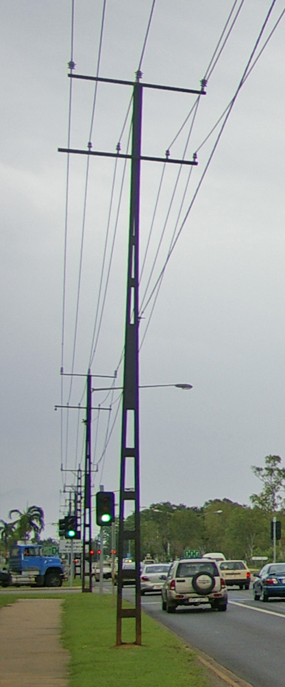

Engineering expertise
Practice areas grounded in delivered work.
Capabilities are organized by sector, technical responsibility and representative project experience.

Transportation
Bridge Engineering & Rehabilitation
Assessment, inspection, rehabilitation, load evaluation and construction support.

Buildings
Buildings & Critical Facilities
High-rise, healthcare, public, industrial and nuclear structures.

Specialized structures
Communication Towers
Self-supporting, rooftop, greenfield, monopole and guyed systems.

Power infrastructure
Transmission Towers
Anchor and river-crossing lattice towers under conductor and broken-wire loading.

Facilities
Healthcare & Institutional Structures
Concrete and steel systems for complex public and institutional projects.

Research
Structural Dynamics & Innovation
Wind engineering, hybrid simulation, seismic response and smart materials.